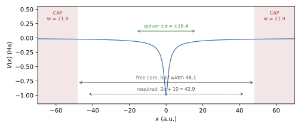

Simulating HHG Correctly
High-harmonic spectra are the Fourier transform of a time signal that spans many orders of magnitude, so small numerical defects (reflections, a field with a DC component, an unresolved cutoff, drifting free electrons) appear as spurious structure long before they affect norms or energies. This page lists what to set and what to check, with a validated 1D example. The physical picture is the three-step model [Corkum1993] [Lewenstein1994]: ionisation, acceleration in the field and recombination with the parent ion, with the plateau cutoff [Krause1992]
where \(U_p\) is the ponderomotive energy and \(\alpha\) the quiver amplitude of a free electron. The quantum-mechanical treatment [Lewenstein1994] refines the cutoff to \(1.32\,I_p + 3.17\,U_p\), which the example below reproduces.
Worked Example
Files: examples/hhg/hhg_1d.inp and examples/hhg/hhg_spectrum.py.
1D soft-core atom \(V=-1/\sqrt{x^2+1}\) (\(I_p = 0.670\) Ha), 800 nm
(\(\omega = 0.057\)), \(10^{14}\) W/cm² (\(E_0 = 0.0534\)),
16-cycle flat-top pulse with 2-cycle sin² ramps. The field is
\(E = -dA/dt\) of \(A(t) = (E_0/\omega) f(t)\sin\omega t\), with the
envelope \(f\) and its derivative written out explicitly in LaserX.
The deck (comments removed):
Dimension = 1
Domain = -70.0, 70.0
SplineDegree = 7
NQuadratures = 10
KnotSequence = uniform
NSplines = 560
Charge = -1.0
Mass = 1.0
Potential = -1.0 / sqrt(x*x + 1.0)
PotentialDerivativeX = x / (x*x + 1.0)^1.5
TargetEigenvalue = -0.8
NBoundStates = 4
InitialState = ground
Variables = E0=0.0534, w=0.057
Variables = Tr=220.4625, Tf=1543.2375, Tp=1763.7
Polarization = x
LaserX = -(E0/w)*( (t<Tr ? (pi/(2*Tr))*sin(pi*t/Tr) : t<Tf ? 0 : t<Tp ? -(pi/(2*Tr))*sin(pi*(t-Tf)/Tr) : 0)*sin(w*t) + w*(t<Tr ? sin(pi*t/(2*Tr))^2 : t<Tf ? 1 : t<Tp ? cos(pi*(t-Tf)/(2*Tr))^2 : 0)*cos(w*t) )
EnablePropagation = 1
Propagator = pade22
TimeStep = 0.05
FinalTime = 1763.7
EnableCAP = 1
CAPKmin = 0.3
OutputStrideWFS = 100000
Run from examples/hhg (tdsez.x is built in build/; see
MPI Notes for --bind-to none):
mpiexec -n 1 --bind-to none ../../build/tdsez.x -inp hhg_1d.inp
python hhg_spectrum.py td/TimeEvolutionData_hhg_1d.inp.h5 --omega 0.057 --plot hhg.png
Fig. 12 shows the layout of the box: the CAP layers of width \(6.555/0.3 = 21.9\) a.u. leave a free core of half width 48.1 a.u., more than the \(2\alpha + 10 = 42.9\) a.u. checked at start-up.


Fig. 12 Box of examples/hhg/hhg_1d.inp: soft-core potential, CAP layers at both
walls, free core and the quiver amplitude \(\alpha = E_0/\omega^2\) of
Eq. (70).
Measured result (15 s on one core): clean odd harmonics (even/odd peak ratio \(10^{-4}\)–\(10^{-3}\)), plateau up to H27–H29 and a sharp cutoff at \(1.32\,I_p + 3.17\,U_p = 1.58\) Ha (H27.7); the three equivalent spectra of Eq. (71) agree to a few per cent up to H39; final norm 0.992 (0.8 % ionised, no depletion).
The Spectrum
The dipole table (td/TimeEvolutionData_<input>.h5, dataset dipoles)
holds, per axis, the dipole \(D = q\langle x\rangle\) and the dipole
acceleration \(A = q\,d\langle v\rangle/dt\) (Observables); the
currents table holds \(J = q\langle v\rangle\). The emitted spectrum is
and the three forms are identical for exact dynamics [Burnett1992].
hhg_spectrum.py computes all three with a window over the whole record and
writes <stem>_hhg.dat with the columns harmonic order, \(S_A\),
\(S_J\), \(S_D\), where <stem> is the HDF5 file name without
.h5. Options:
Option |
Effect |
|---|---|
|
Laser angular frequency in a.u. (required); sets the harmonic order \(\omega/W\). |
|
Emission axis (default |
|
Window applied before the transform (default |
|
Highest harmonic order written (default 60). |
|
Write a log-scale plot of the three spectra (requires matplotlib). |
The script stops if the time samples are not uniform. How to read the three spectra:
Use \(|\tilde A|^2\) as the result. The acceleration is dominated by the recolliding electron near the core and is insensitive to the slowly drifting free part.
\(\omega^2|\tilde J|^2\) should agree with it across the plateau; a disagreement indicates an unconverged run.
\(\omega^4|\tilde D|^2\) amplifies any low-frequency error by \(\omega^4\). It agrees in a clean run (example above) but is the first to show reflections or free-electron drift; a dipole spectrum far above the acceleration spectrum is a diagnostic, not a result.
Checklist
Field
Give the field as \(E = -dA/dt\) of a vector potential that vanishes at both ends (
LaserXis the electric field). Then \(\int E\,dt = 0\): no DC kick, no drift of the ionised electrons, no spurious low-order signal. A sin² envelope written directly on \(E\) has a non-zero area for most phases.Short sin² pulses chirp the harmonics (the intensity changes every cycle), and the single-atom spectrum then shows broad, shifted and even-order-looking structure. This is physical, not numerical noise; use a flat-top pulse, as in the example, when clean harmonic lines are needed, for example for convergence tests.
Set
Polarizationto the driven axes; the response on the other axes is recorded as well (ObserveAllAxes = 1, default), which gives the cross-polarised emission in 2D/3D.
Box and absorber
The free core must hold the electron excursion: half width at least about \(2\alpha + 10\) a.u. (\(\alpha\) = 16.4 a.u. at 800 nm, \(10^{14}\) W/cm²). The CAP report printed at start-up lists the free core of every axis and, on the driven axes, compares its half width with \(2\alpha + 10\); a shortfall is reported as
WARNING: x free core half width ... < 2 alpha + 10. \(E_0\) and \(\omega\) are estimated from the field expression for this check.EnableCAP = 1. The CAP [Manolopoulos2002] removes the electrons that do not return; without it they reflect from the wall and recollide at wrong times.CAPKmin(default 0.1) is the slowest momentum absorbed with little reflection and sets the layer width per wall, \(w = 6.555/k_{\min}\);CAPWidth > 0sets \(w\) directly instead.CAPKmin0.2–0.3 a.u. (CAPWidth22–33 a.u.) is a good start; check that a wider layer (larger domain) does not change the spectrum.
Resolution
Space: the fastest returning electron has \(k_{\max} = \sqrt{2(3.17U_p+I_p)}\) (1.65 a.u. here, wavelength 3.8 a.u.); use at least 8–10 basis functions per wavelength (element width 0.25 a.u. with degree 7 in the example). At start-up the code compares the widest element of every axis with \(\pi/(2k_{\max})\) and prints
TDSEZ WARNING: x axis: widest element ... the returning electron and the harmonic cutoff are under-resolved therewhen it is wider; this check uses \(I_p = -E_{\rm target}\), with \(E_{\rm target}\) =TargetEigenvalue(\(I_p = 0.5\) if the target is not negative). Near a Coulomb-like core refine the knots (Knot Sequences). WithKnotSequence = hydrogenicthe measured requirement is an outer width \(\le \pi/(2k_{\max})\) along the field and twice that across it (TransverseElementFactor), applied automatically per axis whenHydrogenicHMax = 0, the default, and a field is present, and an innermost spacingHydrogenicR1\(\le\) 0.05 a.u. on every axis. A smaller transverse box is possible as long as a free core of about \(\pm\) 15–20 a.u. remains inside the CAP layers.Time: resolve the cutoff, \(\omega_c\Delta t \ll 1\). Crank-Nicolson (
cn) has a relative phase error \((\omega\Delta t)^2/12\) per step; the fourth-order propagators (pade22,magnus4) allow \(\Delta t\) = 0.05 at 800 nm (Time Propagation).The time series are recorded at every step, so the Nyquist frequency is \(\pi/\Delta t\), far above any cutoff.
Atom
Ground state from the eigensolver (
InitialState = ground) with aTargetEigenvaluejust below it.PotentialDerivativeX/Y/Zmust be the exact gradient ofPotential: the operator form of the acceleration uses it (AccelerationMethod = auto, the default, selects the operator form for a constant mass). A wrong derivative gives a wrong \(\tilde A\) while \(\tilde J\) and \(\tilde D\) remain correct; the three-way comparison of Eq. (71) detects it.Charge = -1for electrons. The dipole and acceleration columns carry the charge (\(D = q\langle x\rangle\)); the spectra do not depend on its sign.Watch depletion: the final norm (
energiescolumn 6) and the ground-state population. Above about 50 % ionisation the plateau is saturated and the spectrum depends strongly on the pulse shape. The softer potential \(-1/\sqrt{x^2+2}\) (\(I_p = 0.5\)) is ionised by 94 % under the same pulse (measured).
Convergence
Repeat with \(\Delta t/2\), a finer grid, a larger box and a smaller
CAPKmin; the harmonic peaks of \(|\tilde A|^2\) should move by much
less than the feature being interpreted.
Higher dimensions
The same rules apply in 2D/3D. The cost is dominated by the number of
non-zeros per row, \((2p+1)^d\): prefer degree 3–4 in 3D, use
ObserveAllAxes = 0 when only the driven axis is needed, and keep the box
just large enough for the free core; the CAP absorbs the rest.